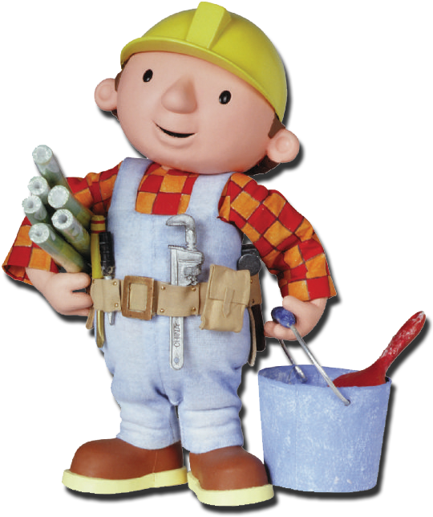

<!DOCTYPE html>
<html lang="es">
  <head>
    <meta charset="UTF-8" />
    <meta name="viewport" content="width=device-width, initial-scale=1.0" />
    <link rel="stylesheet" href="styles.css" />
      <link
      href="https://unpkg.com/boxicons@2.1.4/css/boxicons.min.css"
      rel="stylesheet"
    />
    <title>Ricardo Silveira Construcciones</title>
  </head>
  <body>
</html>

<!--Encabezado-->
<header>
  <nav class="navbar">
    <div class="logo-container">
      
      <a href="#home" class="logo-text">
        <span class="nombre">Ricardo Silveira Construcciones</span>
      </a>
    </div>

    <div class="top-btn">
      <a href="#" class="nav-btn">Obtener presupuesto</a>
    </div>
  </nav>
</header>
<body>
  <!--Seccion de Inicio-->

  <section class="home" id="home">
    <div class="home-content">
      <h3>Hacé realidad tu hogar soñado</h3>
      <p>
        Mi nombre es Ricardo Silveira y puedo ayudarte a combinar de manera
        efectiva creatividad y funcionalidad para redefinir la excelencia en tus
        construcciones.
      </p>
      <a href="#servicios" class="nav-btn">Sobre mí</a>
    </div>

    <div class="roundbob">
      
    </div> 
   </section>

   <section class="trabajo">
    
  </section>

  <!--Sección de Servicios-->
  
   <section class="inicio-servicios" id="servicios"> 
    <div class="contenedor">
    <div class="fullbob"> 
   
  
  </div> 
    <div class="titulo-servicios">
   
  
   <h2 class="encabezado"> <i class='bx bxs-hard-hat'></i><br>Pasión por crear nuevos espacios</h2> 

</section>

<section class="servicios-texto">
   <div class="text-container">
    <p class="typing-efect">Nuestro conjunto integral de servicios profesionales atiende a una clientela diversa, desde propietarios de viviendas hasta empresas comerciales.</p>
  </div>
</div>
</section>
<section class="servicios">
<div class="contenido-servicios">
  <div class="row">
    <i class='bx bxs-hard-hat'></i> <br>
  <h3>Albañilería</h3>
  <p>Mi trabajo en albañilería se distingue por la atención al detalle, la precisión y el compromiso con la calidad. Cada proyecto de albañilería que realizo está pensado para garantizar estructuras sólidas, seguras y duraderas.</p>
</div>
<div class="row">
  <i class='bx bxs-hard-hat'></i> <br>
  <h3>Renovación y remodelación</h3>
  <p>Ya sea en la construcción de muros, fachadas, o en la ejecución de reformas y ampliaciones, me aseguro de que cada pieza esté perfectamente colocada, logrando un acabado impecable.</p>
</div>
<div class="row">
  <i class='bx bxs-hard-hat'></i> <br>
  <h3>Impermeabilización, yeso y pintura</h3>
  <p>Mi experiencia y dedicación en cada obra aseguran que el resultado no solo cumpla con las expectativas, sino que las supere.</p>
</div>
<div class="row">
  <i class='bx bxs-hard-hat'></i> <br>
  <h3>Herrería</h3>
  <p>Mis trabajos de herrería son sinónimo de calidad, resistencia y diseño personalizado. Ya sea que se trate de puertas, rejas, barandales, estructuras metálicas o cualquier otro trabajo en hierro, me enfoco en ofrecer soluciones funcionales y estéticamente atractivas.</p>
</div>
<div class="row">
  <i class='bx bxs-hard-hat'></i> <br>
  <h3>Proyectos Sanitarios</h3>
  <p>Caracterizados por su eficiencia, calidad y cumplimiento de las normativas vigentes. Me encargo de todo tipo de instalaciones sanitarias, desde la renovación de sistemas de agua y desagüe hasta la instalación de equipos especializados.</p>
</div>
<div class="row">
  <i class='bx bxs-hard-hat'></i> <br>
  <h3>Hidrolavados</h3>
  <p>Utilizando equipos de gran tecnología y técnicas especializadas para eliminar suciedad, manchas, moho y residuos de diferentes tipos de distintas superficies. El hidrolavado no solo mejora la apariencia de los espacios, sino que también ayuda a preservar la integridad de las estructuras, evitando daños a largo plazo.</p>
</div>
</div>
</section> 

<!--Obras-->
<section class="obras">
<h3>Proyectos terminados</h3>


</section>

</body>

